{kind=link}

PhotoMunger applies batch processing to a set of photos. It is designed to automate two specific workflows: 1) reducing the size of images, but only when down-scaling will not appreciably lose detail, and 2) enhancing document “scans” made with a point-and-shoot camera in lieu of a proper scanner.
I wrote PhotoMunger to help me automate the two tasks mentioned above which I’ve found myself needing to do on a regular basis. I published it in case there are others who also need to do these tasks and might find the tool helpful. Because of its focused purpose there are a number of things that PhotoMunger won’t do, including most of the various filters found in programs like GIMP or Photoshop. There may be cause to add a feature or two to PhotoMunger, but because those other tools do their jobs very well, I don’t envision it becoming a full-featured general purpose image editor.
PhotoMunger is open source and is licensed under the GPL (GNU Public License). The source can be found on GitHub here.
PhotoMunger processes all photos in one directory. The program can be launched in two ways. First, the directory to process can be specified on the command line: PhotoMunger.exe <path>. Or, if the program is launched with no arguments, it will prompt for the directory to process. Navigate into the directory to process and press Open.
The program then presents a dialog with various processing options. Which options to select depends on the task at hand. See sections later in this document for information about how to use these settings.
After the options dialog is accepted by pressing OK, the main window appears and the program begins analysis of the photos. Depending on the selected options, analysis may take more or less time.
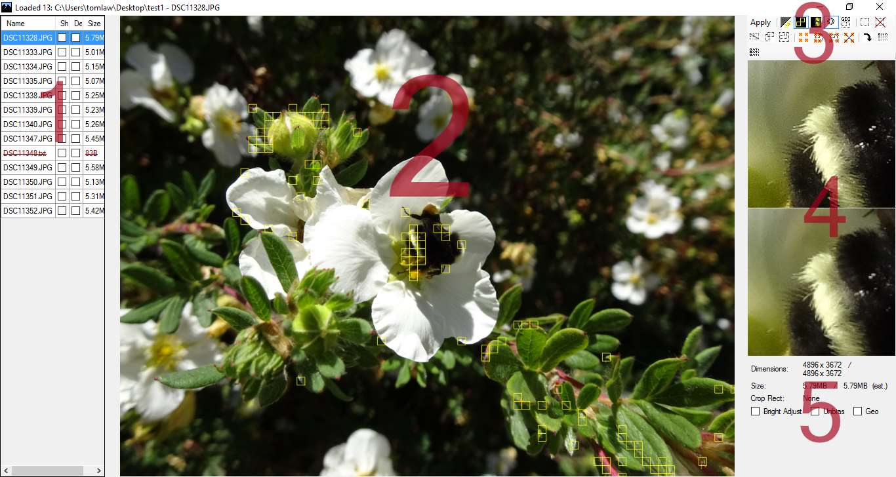
There are 5 primary areas in the display:
Typically, one will inspect all of the images to determine if the automatic transformations are acceptable. If automatic detection did not work as desired, specific changes can be made to an image to improve the result.
After image transformations have been checked and possibly modified, the output is generated by pressing Apply on the toolbar. If this is the first time a directory has been processed, a backup of all files is made. The files are copied to a directory in the same location with same name, but with -original appended. Each image is then processed and the resulting output stored in the selected directory.
The program saves a Settings.xml file in the selected directory (or in the backup directory, if it exists) containing the transformation settings and user interface options for the photo collection so that when the program is closed and reopened the options and per-image transformations are remembered.
Today’s cameras have a huge number of pixels (for example, my Sony DSC-HX90V has 18.2 megapixels) but are often not able to utilize all of that resolution. When conditions are right, meaning bright light, no zooming, and both subject and camera stationary and stabilized, the camera may be able to make use of all of those pixels. However, adverse conditions can reduce the quality of the image, including lower light levels, movement of subject or shaking of camera (which is exacerbated by increased zoom), as well as imperfections in lens focal registration that become more pronounced as zoom increases. The megapixels are still there, but there is no significance to the high frequencies stored in the file - they are noise. For example, it is easy to visualize how a blurry image can be shrunk significantly without loss of sharpness. With photos from an 18mpix camera weighing in at 5 to 7 megabytes each, a 2-week trip to Hawaii can easily chew up 10 gigabytes. One would like to reduce the storage used, but without destroying highly detailed images.
To work on image size reduction for a photo collection, launch the program on the directory to be processed and accept the defaults in the options dialog by pressing OK. The main window will appear and the program will begin analysis of the photos.
By default, the program displays the result of an analysis that identifies regions of an image that contain a high degree of detail that would be lost if the image were shrunk (down-scaled) by a factor of 2. These areas are highlighted by a mesh of yellow boxes. The computation is tuned to detect the degree of loss that a typical person might notice, but it is approximate. For important images, move the mouse over critical areas and use the side-by-side inspection panel to see how much detail would be lost.
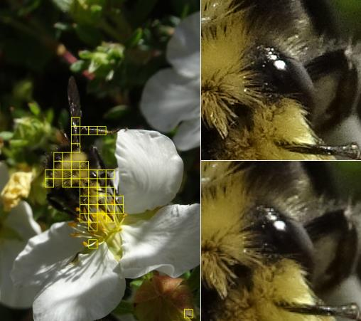
In this example, the left panel shows the yellow mesh identifying an automatically-detected area of high detail and the right panel shows the side-by-side zoomed-in view showing the loss of fine detail should the image be shrunk.
PhotoMunger supports lossless JPEG cropping via jpegtran.exe. To crop an image, first enable the cropping tool by making sure the crop button is selected on the toolbar:
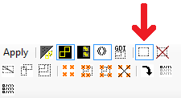
Once the crop tool is selected, clicking and dragging anywhere in the image will create a crop rectangle. The portion of the image inside the rectangle will be retained and that outside will be discarded.
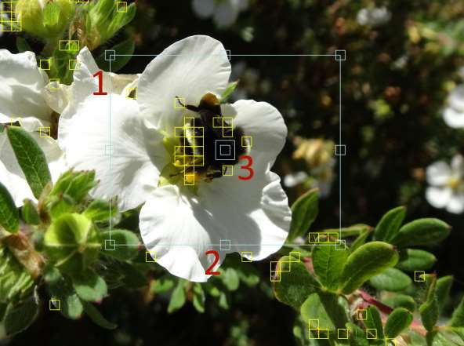
An existing crop rectangle can be modified by clicking and dragging on the pads at the corners (1) or in the middle (2) of each side of the rectangle. The crop rectangle can be moved without changing it’s size or shape by clicking and dragging on the pad in the rectangle’s center (3).
The crop region can be cleared by clicking the clear crop button:
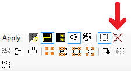
The aspect ratio of the crop rectangle can be constrained. By default, the aspect ratio is made to match the aspect ratio of the overall image.
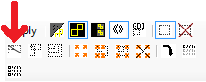
To flip the aspect ratio relative to the overall image’s aspect ratio, select the flip button. The aspect ratio remains the same, but for landscape-oriented images the crop rectangle will be portrait-oriented, and vice versa.
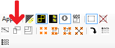
To select a specific aspect ratio (for example, for targeting a specific shape for making prints), click the preset/custom aspect ratio button to open a dialog allowing the aspect ratio to be chosen. In addition to common print/page shapes it is possible to enter a width and height for a custom aspect ratio.
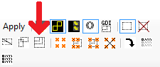
In lieu of a scanner, one might use a point-and-shoot camera to photograph pages of a document. It can be quick, but the quality of the images is usually well below that of scans made with a document scanner since cameras are designed for taking photographs rather than scanning printed pages and therefore make processing decisions that are inappropriate for print documents. Workflow 2 demonstrates how to correct the various problems in a photographed document.
About Edge Detection:
The edge detector used for normalizing geometry and auto-cropping relies on differences in brightness and color between the material outside the page and the page itself. Because these photos tend to be dark it has to be fairly permissive about the brightness levels; it isn’t able to detect the page edges on some surfaces.
You can improve recognition by photographing pages on dark, color-saturated surface, such as a wood tabletop.
Here is our initial document (click here for the full-sized sample file):
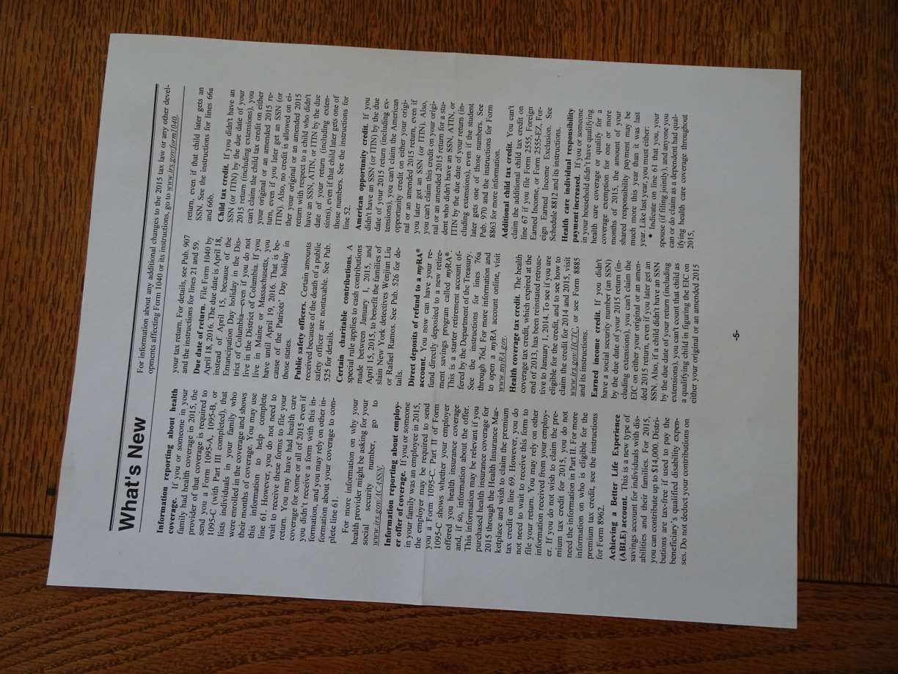
This tutorial will walk through enabling processing options one by one. Note that once the program is running it is not necessary to quit and restart the program to get back to the global options dialog. Instead, select the global options button on the toolbar:
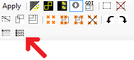
After changes to the dialog are accepted by pressing OK, the program will reanalyze the images and display the updated results.
If all images were photographed with the same incorrect orientation, it can be fixed for all images at one time by setting the desired degree of clockwise rotation in the global options dialog:
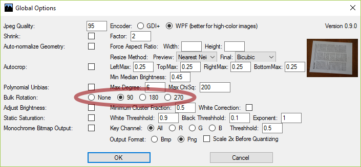
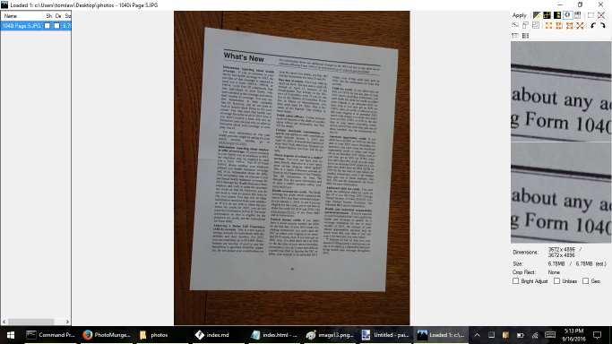
Photographed documents are often geometrically skewed because it is difficult to achieve perfect alignment with a hand-held camera. PhotoMunger will attempt to detect and correct the geometry when the following processing option is enabled in the options dialog:
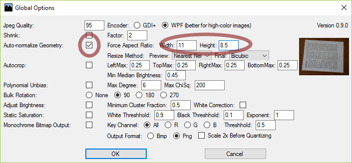
If the measurements of all pages are the same and are known, the width and height can be specified as the desired aspect ratio. Otherwise the analysis will determine an aspect ratio that is approximate.
The page with corrected geometry is displayed in the viewer pane:
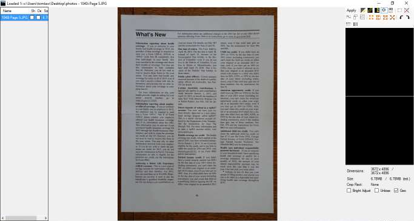
If the geometry is not detected correctly it can be manually adjusted by the following steps.
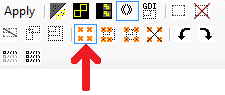
The main view panel will now display the original image with edge guides.
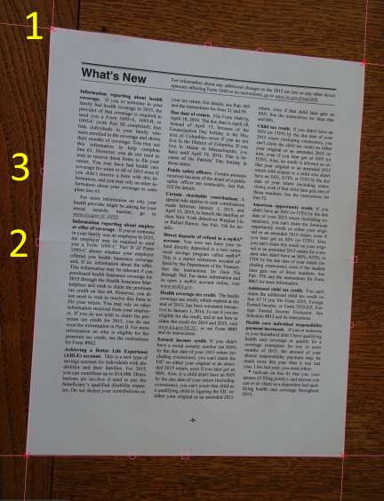
Adjust the edges to match the page. The corners (1) can be dragged to appropriate locations. The line position can be shifted by dragging the rectangular widget shown at (2). Finally, the angle of the line can be changed by dragging the circular widget shown at (3).
Exit the geometry adjustment mode by pressing the same button used to enter it. After a couple of seconds the display will be updated with the new geometry adjustment.
The auto-crop function can be used to find a crop rectangle that removes the surface under the page while retaining the page itself:
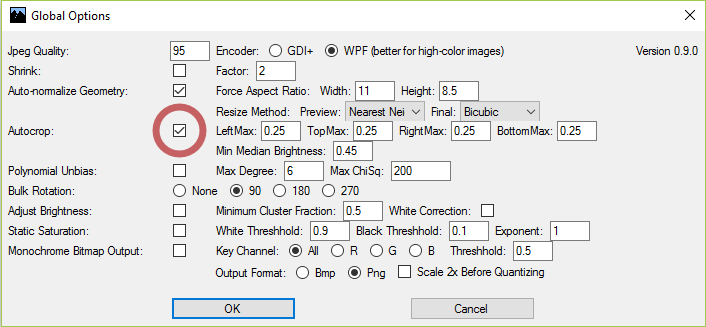
After reanalysis, a crop rectangle will appear around the page.
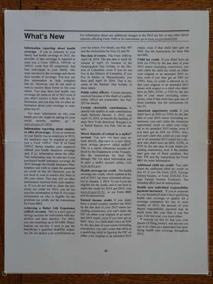
If auto-crop generates an incorrect rectangle, it can be adjusted by entering crop mode from the toolbar and moving the edges of the rectangle.
Most cameras center the distribution of intensity (brightness) around 50%, which is much too dark for scanned documents. To automatically correct the brightness and contrast of all images, enable the Bright Adjust setting in the global options. There is also an option to remove a color bias from the page background.
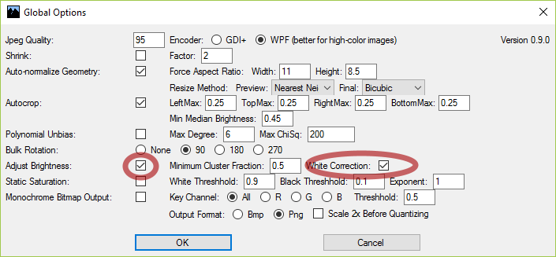
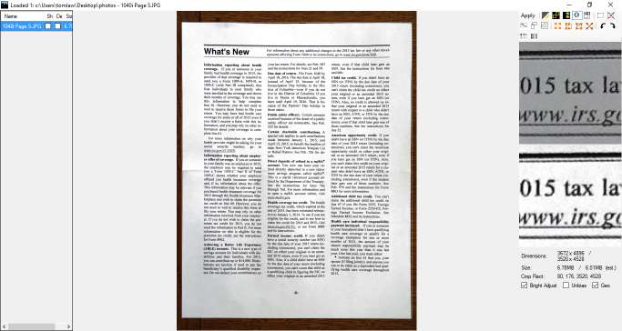
The displayed page from the previous step shows a noticable darkening towards one corner. Uneven lighting is a common problem with photographed documents. To try to correct uneven lighting, enable the Unbias processor.
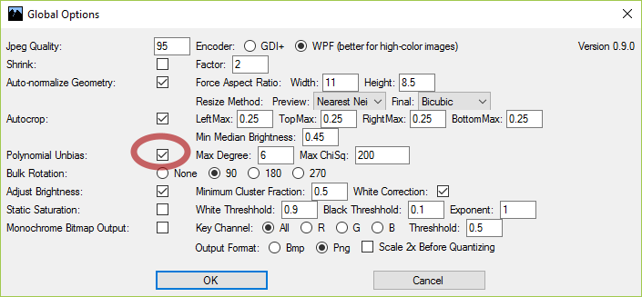
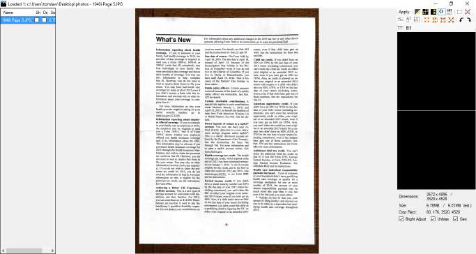
In some cases, light shading can be removed by oversaturating the bright end of the image, and darkness of text can be improved by oversaturating on the dark end. To do this, enable the Static Saturation option. The white threshhold determines what brightness value will now become 1 (maximum brightness). The black threshhold determines what brightness value will now become 0 (minimum brightness, or black). The exponent can apply a curve to the distribution of brightness: 1 applies no curve, greater than 1 brightens midtones, less than 1 darkens midtones.
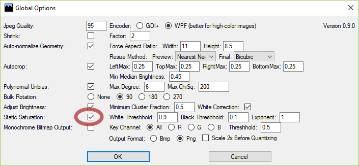
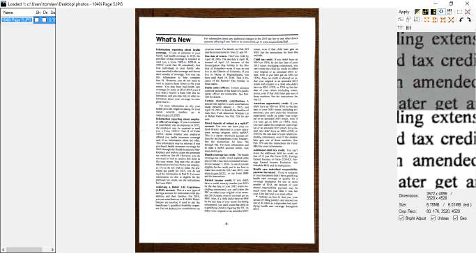
In some cases it may be desirable to convert the image to black-and-white, stored as one bit per pixel. When stored in PNG format in this way, scanned image files are often much smaller than the equivalent JPEG file. They are also more suitable to printing on a black-and-white printer, if called for. To convert to black-and-white image, enable Monochrome Bitmap Output.
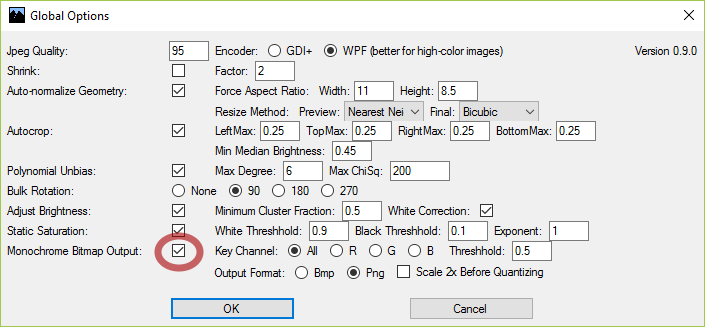
Press Apply on the toolbar to generate the final output image.
Although this tutorial walked through each image processing step separately, usually the settings would be chosen all at once based on the specific condition of the photograph collection. If the results are unsatisfactory, it might be necessary to tweak certain threshholds or other settings. Fortunately, most images in a batch will tend to have the same defects and biases, allowing batch processing with global parameters to do a good job on all of the images.
Last updated September 2016. Authored using stackedit.